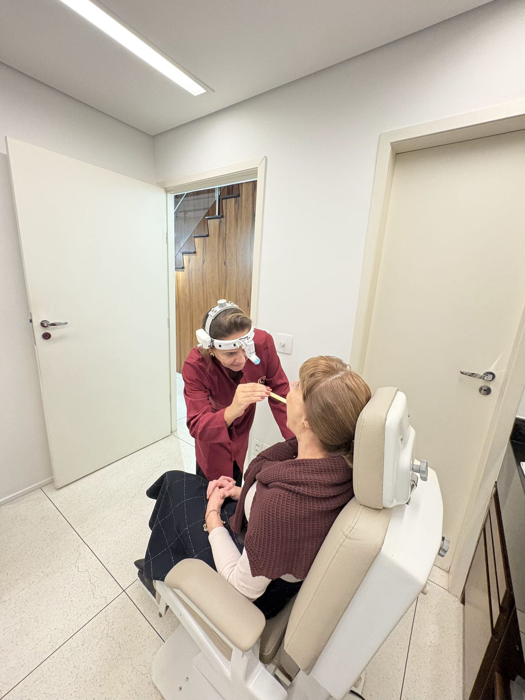
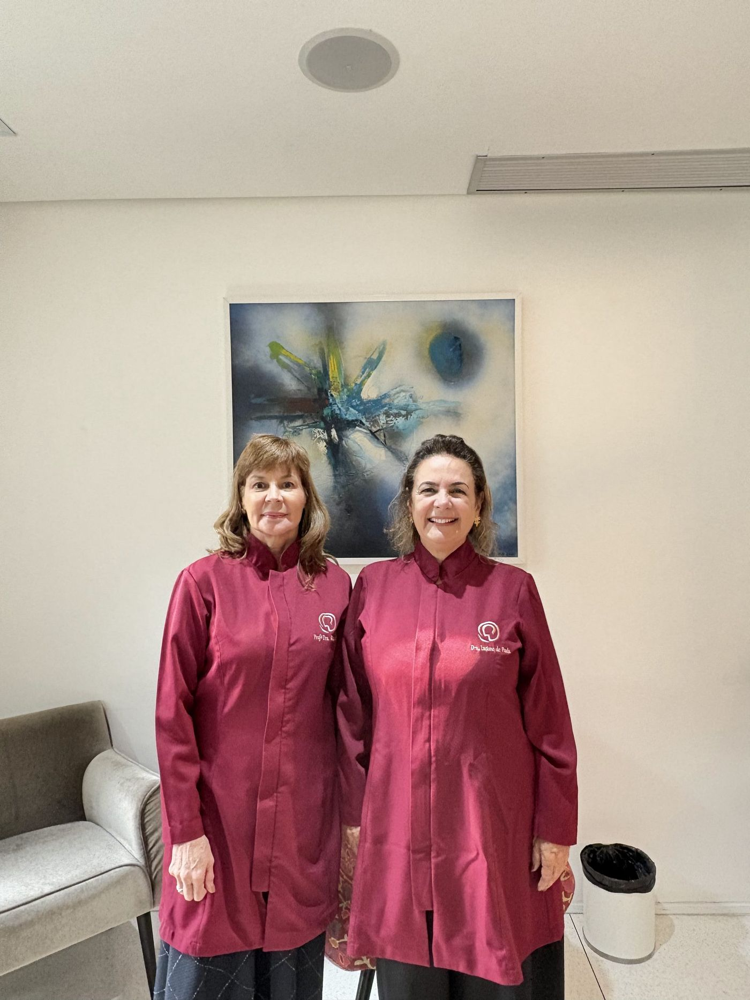
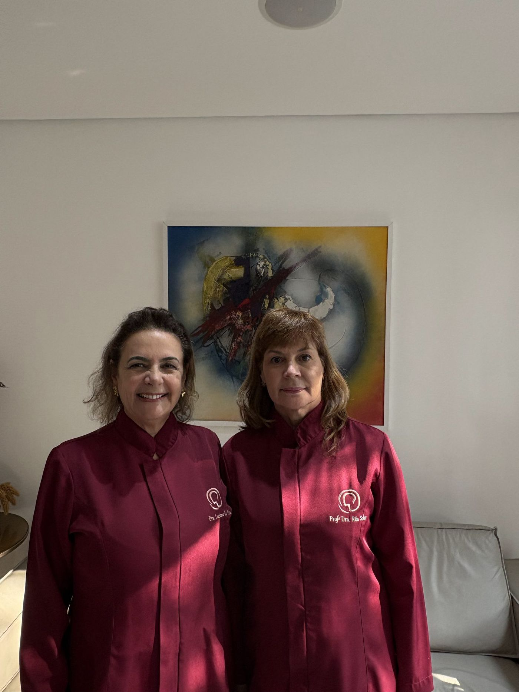

Diagnóstico e tratamento completo de ouvido, nariz e garganta, conduzidos por médicas formadas pela Santa Casa de São Paulo. Quando uma cirurgia é indicada, ela é realizada pelas próprias médicas em hospitais parceiros — o acompanhamento acontece aqui na clínica.

Exame que detecta o grau e o tipo de perda auditiva do paciente. Realizado por fonoaudiólogo, é rápido, simples e indolor — auxilia no diagnóstico e complementa o tratamento otorrinolaringológico.
Avalia a função do labirinto (orelha interna). Indicado para pacientes com tontura, vertigem, desequilíbrio, surdez e zumbidos.
Tratamento de alterações de linguagem oral e escrita, reabilitação do Transtorno do Processamento Auditivo Central, disfonias, alterações de respiração (incluindo ronco e apneia), mastigação, deglutição e fala.
Exame complementar à audiometria, que avalia as estruturas internas da orelha, presença de secreções ou outros fatores de comprometimento auditivo.
Procedimento terapêutico para tratar sintomas de desequilíbrio corporal, como labirintite, tontura e distúrbios do equilíbrio.
Para pacientes com perda auditiva, o aparelho é indicado, selecionado e adaptado às condições físicas de cada paciente.
Exame minucioso da laringe para investigar alterações vocais, auxiliando no diagnóstico de rouquidão e afonia.
Avaliação detalhada da anatomia das mucosas nasais, faringe e laringe — diagnostica congestão nasal, dificuldade de respiração e deglutição, ronco, afonia, rinite, sinusite e desvio de septo.
A clínica não realiza cirurgias em seu próprio espaço — a avaliação, indicação e todo o acompanhamento pré e pós-operatório acontecem aqui na L'Organi, e os procedimentos cirúrgicos de ouvido, nariz e garganta, quando necessários, são realizados pelas médicas em hospitais parceiros.
Otoplastia (orelhas) e blefaroplastia (pálpebras), realizadas em ambiente hospitalar pelas médicas da L'Organi, com abordagem que respeita a naturalidade dos traços e acompanhamento completo na clínica.
Tratamento de lesões da mucosa oral — úlceras, nódulos, bolhas e manchas — decorrentes de doenças sistêmicas, hematológicas ou infecciosas.

